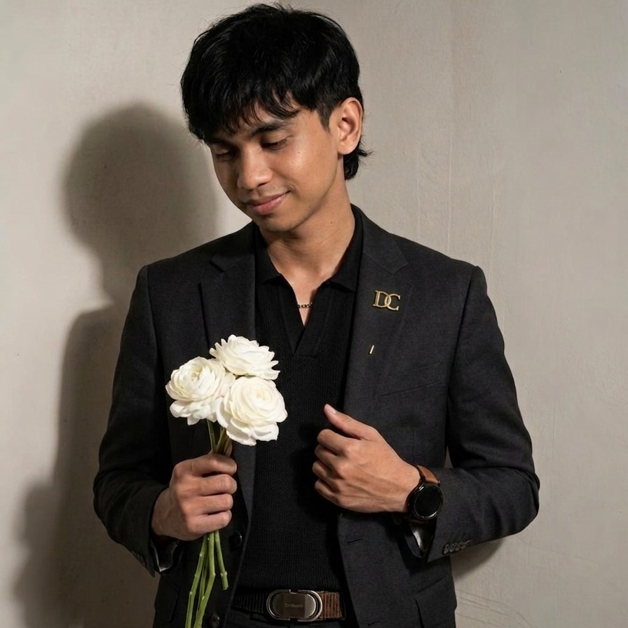

Wingki Sandro Marganda Simbolon
Web Developer — Laravel, Tailwind CSS & Content Management System
Lulusan S1 Teknik Informatika (Fokus Teknologi Web) dari STMIK Pontianak. Berpengalaman sejak 2023 dalam merancang, mengembangkan, dan mengelola berbagai website layanan bisnis serta sistem informasi berbasis framework Laravel maupun CMS.

Web Developer
Wingki Sandro M. S.
Perpaduan keahlian pengembangan sistem web, manajemen konten, dan pemecahan masalah teknis.
Saya adalah lulusan S1 jurusan Teknik Informatika di STMIK Pontianak (2020–2025) dengan peminatan Teknologi Web. Saya fokus membangun aplikasi web yang bersih, responsif di perangkat mobile, dan mudah dikelola menggunakan Framework Laravel, Tailwind CSS, maupun CMS (WordPress).
Selain pengembangan web, saya menguasai pengelolaan data menggunakan Microsoft Office (tersertifikasi keahlian Spreadsheets/Excel), serta memiliki pemahaman kuat dalam troubleshooting hardware maupun software komputer.
4+
Proyek Web & Sistem
2023
Mulai Aktif sebagai Web Creator
STMIK Pontianak
S1 Teknik Informatika — Fokus Teknologi Web (2020 - 2025)
Keahlian & Teknologi
Backend & Integrasi API
Membangun sistem backend, struktur database relasional, serta integrasi layanan API pihak ketiga.
Frontend & Desain Web
Merancang tampilan website yang responsif, modern, dan nyaman diakses lewat smartphone maupun desktop.
Tools, Infrastruktur & IT
Deployment web, pengelolaan hosting/domain, pengolahan data Excel, dan troubleshooting perangkat komputer.
Proyek Website & Sistem Informasi
Daftar website dan aplikasi yang pernah saya bangun serta kelola.
SIPADU SINGKUP — Layanan Administrasi Terpadu
Aplikasi web layanan administrasi publik terpadu untuk Kantor Camat Singkup, Kabupaten Ketapang. Dilengkapi sistem manajemen pengguna multi-role, dashboard pengelolaan berkas permohonan masyarakat, dan antarmuka responsif.
- Arsitektur backend dan pemodelan database menggunakan Laravel.
- Antarmuka modern dan responsif menggunakan Tailwind CSS & Vite.
- Manajemen dokumen, verifikasi status layanan, dan pengelolaan pengguna.
Kaia Service
Membangun dan mengelola website resmi untuk layanan Kaia Service menggunakan framework Laravel. Berfokus pada penyajian informasi layanan yang terstruktur, cepat diakses dari perangkat mobile, serta kemudahan manajemen konten.
- Pengembangan struktur halaman web berbasis Laravel.
- Pengelolaan konten berkala, pemeliharaan sistem, dan konfigurasi domain/hosting.
- Optimasi tampilan mobile agar mudah dinavigasi oleh pelanggan.
Pamungkas RentCar
Merancang desain website dan sistem manajemen konten berbasis Laravel untuk usaha penyewaan mobil Pamungkas RentCar. Menampilkan daftar unit armada, informasi harga sewa, dan integrasi kontak pemesanan langsung.
- Perancangan tata letak katalog unit kendaraan yang rapi dan responsif.
- Manajemen pembaruan data unit dan konten promosi berbasis Laravel.
- Integrasi alur pemesanan pelanggan yang praktis.
Nusantara Coffee Beans
Merancang desain visual dan mengelola manajemen konten website Nusantara Coffee Beans menggunakan Content Management System (CMS). Menyajikan profil perusahaan dan etalase produk biji kopi secara menarik.
- Kustomisasi tema, tata letak visual, dan tipografi website.
- Manajemen publikasi konten produk dan optimasi gambar untuk web.
- Pemeliharaan rutin performa dan ketersediaan website.
Pengalaman Kerja
Web Creator — Kaia Service
Membangun website menggunakan framework Laravel serta menangani manajemen konten dan pemeliharaan situs.
Web Creator — Pamungkas RentCar
Merancang desain website dan mengelola manajemen konten berbasis Laravel untuk layanan sewa kendaraan.
Web Creator — Nusantara Coffee Beans
Merancang desain tampilan dan menangani manajemen konten website berbasis CMS.
Mekanik — Suzuki Daya Kharisma Ketapang
Menangani pemeriksaan teknis, perawatan berkala, dan penyelesaian masalah mekanikal kendaraan.
Pendidikan & Sertifikasi
STMIK Pontianak
S1 Teknik Informatika — Fokus Teknologi Web
Mempelajari rekayasa perangkat lunak, pemrograman web berbasis framework, basis data, dan jaringan komputer.
SMK Negeri 2 Ketapang
Teknik Otomotif Kendaraan Ringan
Sertifikat Keahlian Spreadsheets (Ms. Excel)
Pengolahan data, administrasi, dan pengoperasian paket Microsoft Office.
Mari Terhubung & Berdiskusi
Berdomisili di Pontianak Kota dan siap berkontribusi penuh waktu sebagai Web Developer / Programmer. Hubungi saya melalui kontak di bawah ini: